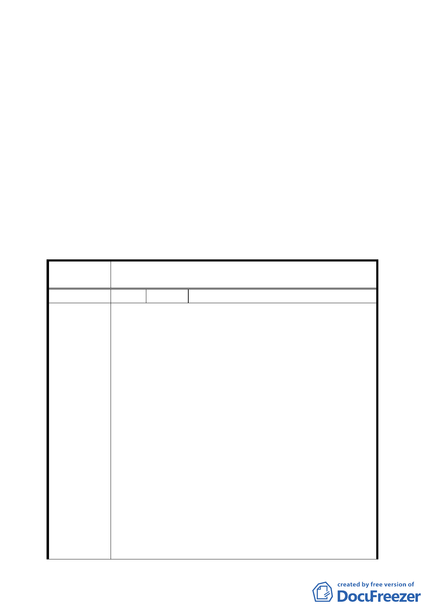

庭園設計為原則」，刪除其中「現代」文字。
二、 依市府所提建築基地內圍牆形貌應與古蹟協調配合外，其基
座在 45 公分以下、高度不得超過 1.8 公尺、沿街圍牆透空率
應達 70％以上為原則，並送都市設計及土地使用開發許可審
議委員會審議。
三、 其餘依專案小組審查結論、本次會議所提修正計畫書及補充
資料內容通過。
四、 後續風貌保存及建築管制部分則請市府秉於文化保存精神加
強管理。
五、 公民或團體陳情意見審決如後附綜理表。
臺北市都市計畫委員會公民或團體所提意見綜理表
案
名
擬定臺北市中正區齊東街保存區及日式宿舍風貌保
存特定專用區細部計畫案
編 號 1 陳情人 周永祥
一、 未能保障周遭居民之基本權益，尤以居住權與財產權
為甚。
二、 4 月 13 日的說明會只是照本宣科，以幻燈片急速帶
過，完全流於形式，對於居民所提疑問又無法答覆，
另反對聲浪如排山倒海，草草結束。
三、 計畫目標首揭「保存本市珍貴文化資產，維護….，形
塑….」，未能說明為何如此作，其意義與價值何在？
四、 建築開發設計管制要點第三點「….歷史建物應盡量採
用日式宿舍等….格局、建築形式、語彙與材料….」
陳情理由
形同綁標，為何還要買日式材料？
五、 有關事業及財務計畫，編列開闢經費共 2 億零 6 百萬
元，市府只顧編列預算 1200 萬元佔 5.82％，其餘則
由民間挹注經費及所有權人支應，著實不合理，請問
民間挹注經費是否開徵區塊內居民受益費？（事實上
是居民未蒙其利、反受其害，還要負擔費用）再者，
80％的費用由所有權人支應，可能是真嗎？
六、 尚有多處不合理事項，無法兼顧居民權益，如環境衛
生、安全考量….等不勝枚舉，無法在此一一詳述，主
其事者實有深入瞭解之必要。
5